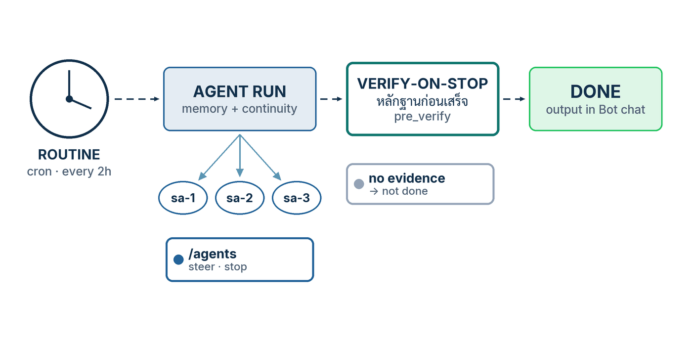

ในบทความนี้
In this post
🤔 ถ้าคุณปิดฝาโน้ตบุ๊กแล้วเดินออกจากโต๊ะ — Hermes ที่คุณเพิ่งตั้งค่ามาห้าตอน ยังทำงานอะไรให้คุณอยู่บ้าง?
ตอนที่แล้ว — #5 Skills, MCP & Memory — เราเติมวัตถุดิบให้ agent: skill ที่โหลดเมื่อต้องใช้, MCP server ที่ต่อเครื่องมือภายนอก และไฟล์ความจำสองไฟล์ที่แก้ได้จากหน้าจอ ตอนนั้นผมทิ้งท้ายไว้ว่าตัวเลขในมิเตอร์ context จะกลับมาอีกครั้ง เพราะทุก cron job และทุก subagent มี context ของตัวเองที่ต้องจ่าย ตอนนี้คือตอนที่มันกลับมา
คำตอบหนึ่งบรรทัด: งานที่รันเองใน Hermes Desktop เข้ามาได้จากสามพื้นผิว — Routine (cron job ที่ Bot เป็นเจ้าของ) ที่นาฬิกาปลุก, subagent ที่ agent เรียกเองด้วย delegate_task เพื่อแตกงานคู่ขนาน และบาน Agents กับ Command Center ที่เป็นหน้าจอสำหรับดูทั้งสองอย่างนั้น จากนั้นบทความนี้จะปิดด้วยด่านที่สำคัญที่สุดของงานไร้คนเฝ้า — verify_on_stop ที่ห้าม agent ตอบว่า "เสร็จ" ในเทิร์นที่มันแก้โค้ดแล้วไม่มีหลักฐานการตรวจสอบใหม่
1. What Runs When You Are Not Typing
ตอบตรง ๆ ก่อน: ใน Hermes Desktop (Hermes Agent v0.21.0, tag v2026.8.31) มีสามพื้นผิวที่เริ่มงานได้โดยคุณไม่ต้องพิมพ์ — cron job ซึ่งปรากฏเป็น Routines เมื่อ Bot เป็นเจ้าของมัน, subagent ที่ agent สร้างเองผ่านเครื่องมือ delegate_task และบาน Agents กับ Command Center ที่เอกสารเรียกว่า "orchestration surfaces for multi-agent work"[3] สองอย่างแรกคือกลไก อย่างที่สามคือหน้าต่างมอง
ความแตกต่างที่ต้องแยกให้ออกตั้งแต่ต้น คือใครเป็นคนกดปุ่มเริ่ม cron job ถูกปลุกโดยตัวจับเวลาของ gateway ตามตารางที่คุณตั้ง มันไปสร้าง session ใหม่ทั้งอัน แล้วส่งผลไปยังปลายทางที่กำหนดไว้ ส่วน subagent ถูกสร้างโดยตัว agent เองระหว่างที่มันกำลังทำงานให้คุณ — มันคือการแตกงานภายในหนึ่งบทสนทนา ไม่ใช่ตารางเวลา เอกสาร delegation เขียนไว้ชัดว่า "Each child gets a fresh conversation and works independently — only its final summary enters the parent's context."[4]
{kind=link}

Routine คือชื่อที่ Bot Mode ใช้เรียก cron job ของตัวเอง และมันไม่ใช่ของใหม่ในระบบ — เอกสาร Bot Mode บอกตรง ๆ ว่า "Routines are plain Hermes cron jobs namespaced [bot:<name>] <routine> — they also show up in hermes cron list and the core Cron page."[2] นี่คือคุณสมบัติที่ผมชอบที่สุดของดีไซน์นี้: หน้าจอสวยไม่ได้สร้าง primitive ใหม่ให้เราต้องเรียนเพิ่ม สิ่งที่คุณคลิกในบาน Routines คือแถวเดียวกับที่ hermes cron list พิมพ์ออกมาในเทอร์มินัล และเป็นไฟล์เดียวกันที่ ~/.hermes/cron/jobs.json[1]
บทความนี้เป็นภาคลงมือทำ ไม่ใช่ภาคทฤษฎี ถ้าคุณอยากได้ชั้นปฏิบัติการเต็ม ๆ ของ cron — โครงไฟล์ executions.db, ledger ของแต่ละรอบ, วง incidents/doctor/runs, webhook ขาเข้าที่ตรวจลายเซ็นก่อนเชื่อ, blueprint และ API server — ผมเขียนไว้แล้วใน Hermes #8 Automation และแผนที่ multi-agent ทั้งสี่ชั้น (subagent, Kanban, Bot Mode/A2A, multi-profile) อยู่ใน Hermes #2 Agent Teams ตอนนี้ผมจะไม่เล่าซ้ำ แต่จะพาคลิกและพิมพ์จริงบนหน้าจอ Desktop แล้วชี้กลับไปที่สองตอนนั้นเมื่อคุณอยากลงลึก
delegate_task เป็นความสามารถของ Hermes Agent ไม่ใช่ของ Desktop โดยเฉพาะ — มันทำงานเหมือนกันจาก CLI, TUI และ gateway สิ่งที่ Desktop เพิ่มคือหน้าจอ: บาน Cron, บาน Routines ที่ผูกกับ Bot, บาน Agents และ Command Center ผมจะระบุทุกครั้งที่ข้อความใดเป็นของ Desktop เท่านั้น
2. Procedure A — Schedule a Routine
ตอบก่อนว่าจะได้อะไร: จบขั้นตอนนี้คุณจะมี Routine หนึ่งตัวที่ผูกกับ Bot ตัวหนึ่ง มีตารางเวลาของตัวเอง ทดสอบยิงได้ทันทีโดยไม่ต้องรอถึงเวลาจริง และผลลัพธ์ไปโผล่ในห้องแชตของ Bot ตัวนั้นเอง — ที่ที่คุณจะคุยกับมันอยู่แล้ว[2]
- ในแถบด้านซ้ายของ Desktop สลับจากแท็บ Sessions ไปแท็บ Bots แล้วเลือก Bot ที่จะเป็นเจ้าของงานนี้ บาน Routines (ในบางบิลด์เรียกว่า Cronjobs) จะเข้ามาเทียบข้างห้องแชต — เอกสารระบุว่ามันโผล่เฉพาะตอนแท็บ Bots ทำงานอยู่ และหลบไปเมื่อคุณสลับกลับไป Sessions ส่วนบิลด์เก่ากว่านั้นจะปักมันไว้ตลอด[3]
- ถ้าอยากได้ภาพรวมทั้งเครื่องแทนที่จะดูทีละ Bot ให้ไปที่บาน Cron ในกลุ่ม management panes ของแถบซ้าย ซึ่งเอกสาร Desktop อธิบายไว้สั้น ๆ ว่า "Cron — view and manage scheduled jobs"[3] ที่นี่คือที่ที่ Routine ของทุก Bot มารวมกับ cron job ที่คุณสร้างจากเทอร์มินัล
- สร้างงานใหม่จากบาน Routines เอกสารอธิบายตัวเลือกตารางเวลาไว้ว่าเป็น "a structured schedule picker … (frequency first, then only the detail that matters), with an Advanced field exposing the raw Hermes schedule string"[2] — แปลว่าคุณเลือกความถี่ก่อน แล้วค่อยกรอกรายละเอียดที่จำเป็น หรือกดเข้า Advanced เพื่อพิมพ์สตริงตารางเวลาดิบลงไปตรง ๆ
- ในช่อง Advanced ใช้รูปแบบที่เอกสาร cron รับรอง ได้แก่ ครั้งเดียวแบบหน่วงเวลา (
in 30m), ช่วงซ้ำ (every 2h), ภาษาวัน–เวลา (every monday 9am,daily at 7am,weekdays at 9am), cron expression ห้าช่อง (0 9 * * *) และ ISO timestamp (2026-03-15T09:00:00)[1] ผมแนะนำ cron expression สำหรับงานที่ต้องพึ่งพาได้จริง เพราะมันไม่มีที่ให้ตีความ - ใส่ prompt ที่อธิบายตัวเองได้ครบ จำไว้ว่าแต่ละรอบเป็น session ใหม่ที่ไม่มีบทสนทนาเดิมติดมา และถ้างานนั้นต้องใช้ความสามารถเฉพาะ ให้ผูก skill เข้าไปด้วย — job หนึ่งตัวผูกได้ศูนย์ หนึ่ง หรือหลาย skill[1]
- บันทึกแล้วยิงทดสอบทันที ปุ่มนี้ชื่อ Trigger now — PR #70638 ที่ merge เมื่อ 15 สิงหาคม 2026 มีชื่อว่า "make Trigger now execute immediately and safely" และแก้ทั้งเส้นทาง Dashboard และ Desktop ให้การยิงทันทีวิ่งผ่าน scheduler provider จริง ๆ แทนที่จะแค่ขยับ
next_run_at[12] - อ่านผล ถ้า Routine เป็นของ Bot ผลจะลงในประวัติแชตของ Bot ตัวนั้น[2] และไม่ว่าปลายทางจะเป็นอะไร ทุกรอบจะถูกเขียนลงไฟล์เสมอที่
~/.hermes/cron/output/{job_id}/{timestamp}.md[1] — นี่คือหลักฐานที่ย้อนอ่านได้เมื่อผลไม่มาถึงคุณ
ฝาแฝดฝั่ง CLI
ทุกอย่างข้างบนมีคำสั่งเทอร์มินัลคู่กัน และผมมักสร้างจากตรงนี้เพราะมันเขียนลง runbook ได้ คำสั่งต่อไปนี้คัดมาจากหน้าเอกสาร cron และหน้าอ้างอิง CLI ตรง ๆ:
# สร้างงานซ้ำทุกสองชั่วโมง — ตัวอย่างตรงจากเอกสาร
hermes cron create "every 2h" "Check server status"
# ผูก skill เข้ากับงาน (ใส่ --skill ซ้ำได้หลายอัน)
hermes cron create "every 1h" "Summarize new feed items" --skill blogwatcher
# ให้แต่ละรอบเห็นผลของรอบก่อนหน้าตัวเอง
hermes cron create "every 6h" "Scan for news" --continuity
# ดูรายการทั้งหมด — Routine ของ Bot จะโผล่ที่นี่ด้วย ชื่อขึ้นต้น [bot:<name>]
hermes cron list
# วงจรชีวิตที่เหลือ
hermes cron <pause|resume|run|remove|status|doctor|tick> <job_id_or_name>สองรายละเอียดที่ประหยัดเวลาได้มาก อย่างแรก คำกริยาที่เปลี่ยนสถานะทั้งหมด (pause, resume, run, remove, edit) รับชื่องานแทนรหัสฐานสิบหกได้ โดยไม่สนตัวพิมพ์เล็กใหญ่ และถ้ามีชื่อซ้ำกันหลายงาน ระบบจะปฏิเสธพร้อมแสดงรหัสผู้สมัครทั้งหมดให้เลือกเอง แทนที่จะเดา[1] อย่างที่สอง hermes cron doctor เป็นการตรวจสุขภาพฝูงงานแบบอ่านอย่างเดียว — รอบที่ล้มเหลว การส่งที่ล้มเหลว next_run_at ที่เลยกำหนดหรือหายไป สคริปต์และโฟลเดอร์ที่ไม่มีอยู่จริง — และมันคืนค่าออกไม่เป็นศูนย์เมื่อพบปัญหา ซึ่งแปลว่าคุณเอาไปแขวนใน CI หรือ cron ของระบบปฏิบัติการได้เลย[9]
💡 ตั้งแต่ v0.21.0 งานตามเวลาไม่ใช่ปลาทองอีกต่อไป: release note ของ v0.21.0 เขียนไว้ว่า "Scheduled jobs stopped being goldfish. Cron agents now load and update persistent memory like every other agent,continuity=truecarries each run's output into the next (so a monitor can dedupe against what it already reported), every job gets a durable notepad scratchpad, monitor-mode jobs skip the LLM entirely when nothing changed"[11] ข้อควรทราบที่ผมตรวจเองในวันที่เขียน: หน้าเอกสาร cron ยังตามไม่ทัน — มันอธิบายcontinuityและcontext_fromไว้ครบ แต่ไม่มีประโยคใดพูดถึง persistent memory ของ cron เลย[1] ผมจึงแนะนำให้ยึดcontinuityเป็นกลไกที่เอกสารรับรอง และถือ persistent memory เป็นพฤติกรรมที่ release note ประกาศ แต่ยังไม่มีหน้าเอกสารกำกับว่ามันแตะไฟล์ความจำไฟล์ไหนบ้าง
เรื่องจากชุมชนที่ผมคิดว่าคุ้มค่ากับการอ่าน: คำบ่นที่พบบ่อยที่สุดเรื่อง cron ไม่ใช่ "มันทำผิด" แต่คือ"มันรันครั้งเดียวแล้วไม่รันอีกเลย" วิดีโอเดินสาย Hermes Desktop ของ Greg Isenberg กับ Alex Finn (6 มิถุนายน 2026) สรุปทางแก้ไว้ในประโยคเดียวว่า Finn "praises the Cron section for giving one-click confirmation that scheduled tasks truly exist"[14] — พูดอีกอย่างคือ งานที่สั่งผ่านแชตหรือผ่าน Telegram แล้วไม่เคยเปิดดูในบาน Cron คืองานที่คุณไม่รู้ว่ามันมีอยู่จริงหรือเปล่า บาน Cron จึงไม่ใช่ของประดับ มันคือใบยืนยัน และ hermes cron list คือใบเดียวกันในเทอร์มินัล
approvals.cron_mode ไว้ที่ deny เป็นค่าเริ่มต้น หมายความว่าเมื่อ cron job ชนคำสั่งที่ถูกจัดว่าอันตราย ระบบจะบล็อกทันที (agent ต้องหาทางอื่น) ไม่ใช่รอคำอนุมัติที่ไม่มีใครมากด[8] อย่าเปลี่ยนเป็น approve เพียงเพราะงานหนึ่งงานติดขัด — ผมเก็บเรื่องโหมด approvals ทั้งชุดไว้ที่ #7 Safety, Remote & Recovery
3. Procedure B — Delegate and Watch
ตอบก่อน: คุณไม่ได้ "กด" ปุ่มสร้าง subagent เอง คุณขอให้ agent แตกงาน แล้วมันเรียก delegate_task เอง หน้าที่ของคุณคือดูว่ามันแตกไปกี่ตัว กำลังทำอะไร และเมื่อมันเดินผิดทาง คุณสั่งแก้ทิศระหว่างทางได้โดยไม่ต้องทิ้งงานที่ทำมาแล้ว
- ในห้องแชตปกติของ Desktop สั่งงานที่แตกเป็นชิ้นอิสระได้จริง เช่น "ช่วยรีวิว PR สามอันนี้พร้อมกัน แล้วสรุปมาให้ผมทีละอัน" ถ้างานย่อยไม่ขึ้นต่อกัน agent จะเลือกส่งเป็น batch เอง
- รู้ว่า agent ส่งอะไรออกไป — พารามิเตอร์ของ
delegate_taskที่เอกสารระบุคือgoal(สิ่งที่ต้องทำ),context(ทุกอย่างที่ลูกต้องรู้ เพราะมันเริ่มจากบทสนทนาว่างเปล่า),tasks(อาเรย์สำหรับ batch คู่ขนาน, ใส่groupได้ถ้าต้องการให้ผลรวมกลับมาเป็นก้อนเดียว),roleที่เป็น"leaf"โดยปริยายหรือ"orchestrator",max_iterations(จำนวนเทิร์นเรียกเครื่องมือของลูกหนึ่งตัว),backgroundและoutput_schema[4][11] - ถ้างานต้องการคำตอบที่มีรูปทรงแน่นอน ให้ขอ
output_schemaPR #81144 ที่ merge เมื่อ 7 สิงหาคม 2026 อธิบายพฤติกรรมไว้ว่าลูกจะได้รับ schema เป็น "an explicit OUTPUT CONTRACT block in its context" แล้วพ่อแม่ตรวจคำตอบสุดท้ายด้วย jsonschema ถ้าไม่ผ่านจะส่งกลับไปแก้หนึ่งเทิร์นเท่านั้น พร้อมข้อความ error ตามจริง[12] - ดูว่าใครกำลังวิ่งอยู่ด้วย
/agents(ชื่อพ้อง/tasks) เอกสารระบุว่ามันแสดงต้นไม้สดของ subagent ที่กำลังรันและที่เพิ่งจบ จัดกลุ่มตามพ่อแม่ พร้อมยอดรวมค่าใช้จ่าย โทเคน และไฟล์ที่ถูกแตะต่อกิ่ง และมีปุ่ม kill กับ pause ที่ยกเลิก subagent ตัวเดียวได้โดยไม่กระทบพี่น้อง[4] - สั่งแก้ทิศแทนที่จะฆ่าทิ้ง — พ่อแม่คุมลูกด้วยเครื่องมือตัวเดียวกับที่ใช้สร้าง โดยส่ง action สามแบบตามบล็อกโค้ดข้างล่าง เอกสารเตือนไว้ตรง ๆ ว่า "Interrupting a child throws away its in-flight work; often you just want to redirect it."[4]
- อ่านค่าใช้จ่าย v0.21.0 เพิ่ม "per-delegation cost surfaced in results" เข้ามา[11] ทำให้คุณเห็นราคาของการแตกงานเป็นรายครั้ง ไม่ใช่แค่ยอดรวมของ session
{"action": "list"}
{"action": "steer", "subagent_id": "sa-0-1a2b3c4d", "message": "focus on pricing instead"}
{"action": "stop", "subagent_id": "sa-0-1a2b3c4d"}สามคำสั่งนี้อ่านง่ายแต่มีข้อละเอียดที่ควรรู้ก่อนพึ่งพา list คืนลูกที่ยังมีชีวิตของบทสนทนานี้ พร้อม subagent_id, goal, สถานะ, running_seconds, accepting_steer และเส้นทางไฟล์ transcript สด steer ต่อคิวคำสั่งแก้ทิศเข้าไปโดยไม่หยุดลูก และ stop จบลูกที่ขอบรอบถัดไป โดยผลบางส่วนยังกลับเข้าบทสนทนาตามปกติ ไม่ได้หายไปเปล่า ๆ ทั้งสาม action ทำงานแบบซิงโครนัสในเทิร์น ผูกอยู่กับต้นไม้ของผู้เรียกเท่านั้น (บทสนทนาหนึ่งมองไม่เห็นและคุมลูกของ session อื่นไม่ได้) และไม่กิน spawn cap ต่อเทิร์น ดังนั้น stop ยังใช้ได้แม้ cap เต็มแล้ว[4]
มีกับดักหนึ่งที่ผมอยากให้จำ: "queued" ไม่ได้แปลว่า "delivered" เอกสารอธิบายว่าคำตอบ "queued" หมายถึงข้อความถูกรับก่อนขอบเวลาจบของลูก ไม่ได้แปลว่าลูกเห็นแล้ว ถ้าลูกรับ steer ไว้แต่ผลิตคำตอบสุดท้ายไปก่อน รายการที่พ่อแม่ได้รับจะเก็บมันไว้เป็น missed_steer พร้อมหมายเหตุต่อท้ายสรุปว่า [steer did not land — the subagent finished before it could be delivered: …] — ออกแบบมาเพื่อให้คุณแยกลูกที่ถูกแก้ทิศออกจากลูกที่จบไปตามคำสั่งเดิมได้[4]
4. Gates for Unattended Work
ตอบตรง ๆ: ปุ่มที่คุณต้องการชื่อ agent.verify_on_stop เอกสาร configuration อธิบายไว้ว่า "When enabled, Hermes refuses to accept a final answer on a turn where the agent edited code in a workspace but produced no fresh verification evidence (a passing test run, build, lint, etc.) — it injects a synthetic follow-up asking the agent to verify or explain why it can't."[5] การแก้ไฟล์เอกสาร markdown หรือ skill ล้วน ๆ ไม่ทำให้ด่านนี้ทำงาน และวงจรมีขอบเขตจึงขังตัว agent ไม่ได้
ค่าเริ่มต้นคือ ปิด และนี่คือจุดที่คนตกม้าตายบ่อยที่สุด เพราะหลายคนคิดว่ามันเปิดมาให้แล้ว บล็อก config มีสามคีย์:
agent:
verify_on_stop: false # true | false | "auto" (surface-aware: on for CLI/TUI/desktop, off for messaging)
verify_guidance: true # Append creative-UI / clean-diff guidance to the missing-evidence nudge
max_verify_nudges: 3 # Cap on consecutive continue nudges per turn (built-in + pre_verify hooks)สามค่าที่ verify_on_stop รับคือ true (เปิดทุกพื้นผิว), false (ปิด — ค่าเริ่มต้น) และ "auto" ซึ่งเป็นพฤติกรรมรู้พื้นผิวแบบเดิม: เปิดสำหรับพื้นผิวเขียนโค้ดที่มีคนนั่งอยู่ — CLI, TUI, desktop — และผู้เรียกเชิงโปรแกรม แต่ปิดสำหรับพื้นผิวข้อความอย่าง Telegram หรือ Discord ที่เรื่องเล่าการตรวจสอบกลายเป็นเสียงรบกวน[5] เอกสารยังระบุว่าตัวติดตั้งใหม่มาพร้อม false และการย้ายค่า config ก็ปิดมันในเครื่องที่ติดตั้งไว้ก่อนแล้ว การเปิดจึงเป็นการเลือกอย่างตั้งใจเสมอ และมีตัวแปรสภาพแวดล้อม HERMES_VERIFY_ON_STOP ทับค่าใน config ได้ ผมยืนยันค่าเริ่มต้นนี้จากไฟล์ต้นฉบับด้วย: hermes_cli/config_defaults.py มี "verify_on_stop": False และ "max_verify_nudges": 3[10]
ด่านที่สอง — hook pre_verify
ถ้ากฎของทีมคุณเฉพาะเจาะจงกว่า "ต้องมีหลักฐาน" ให้เขียน plugin hook เอกสาร hooks ระบุว่า pre_verify "Fires once per turn when the agent edited code, just before it finishes (after the built-in verify-on-stop guard)" และเรียกมันว่า "a user/plugin policy gate"[6] payload ที่ callback ได้รับมีเจ็ดตัว:
session_id— รหัสประจำ session ปัจจุบันplatform— พื้นผิวที่ session รันอยู่ ("cli","telegram", …)model— ตัวระบุโมเดลcoding— เทิร์นนี้อยู่ในท่าทางเขียนโค้ดหรือไม่ ใช้จำกัดขอบเขต hook ของคุณattempt— เทิร์นนี้ถูกสะกิดไปแล้วกี่ครั้ง (ครั้งแรกเป็น 0) ใช้กันตัวเองไม่ให้สะกิดวนfinal_response— คำตอบที่ agent กำลังจะส่งchanged_paths— ไฟล์ที่ agent แก้ในเทิร์นนี้ (เรียงแล้ว และในบริบทนี้ไม่เคยว่าง)
คืนค่า {"action": "continue", "message": "…"} เพื่อส่ง agent กลับไปทำงานต่อ — ข้อความจะถูกต่อเป็นเทิร์นผู้ใช้สังเคราะห์แล้ววนใหม่ เอกสารบอกด้วยว่ารูปแบบ Stop ของ Claude Code ({"decision": "block", "reason": "…"} ซึ่งการบล็อกการหยุดแปลว่าให้ทำต่อ) ก็รับได้เช่นกัน คืนค่าอย่างอื่นหรือคืนคำสั่งที่ไม่มีข้อความ = ปล่อยให้เทิร์นจบ[6] คำสั่ง continue ที่ต่อเนื่องกันในหนึ่งเทิร์นถูกจำกัดโดย agent.max_verify_nudges (ค่าเริ่มต้น 3) ดังนั้น hook ที่พูดว่า continue ตลอดเวลาก็ขังลูปไม่ได้[6]
โครงสร้าง plugin ที่เล็กที่สุดที่ทำงานได้ ตามที่หน้าเอกสาร plugins วางไว้ คือโฟลเดอร์ใน ~/.hermes/plugins/ ที่มี plugin.yaml กับ __init__.py ซึ่งมีฟังก์ชัน register(ctx) เรียก ctx.register_hook(...):
# ~/.hermes/plugins/verify-gate/__init__.py
# ตัวอย่างนี้ยึดโครง register(ctx) + ctx.register_hook จากหน้าเอกสาร plugins
# และลายเซ็น pre_verify จากหน้าเอกสาร hooks
def require_changelog(coding, attempt, changed_paths, **kwargs):
if attempt or not coding:
return None # ทำครั้งเดียว และเฉพาะงานเขียนโค้ด
if any(p.endswith("CHANGELOG.md") for p in changed_paths):
return None # มี changelog แล้ว ปล่อยจบ
return {
"action": "continue",
"message": "Add a CHANGELOG.md entry for this change before finishing.",
}
def register(ctx):
ctx.register_hook("pre_verify", require_changelog)สองบรรทัดแรกของฟังก์ชันคือคำแนะนำของเอกสารเอง: กำหนดขอบเขตด้วย coding และทำให้เป็น one-shot ด้วย attempt เพราะ hook จะยิงซ้ำหลังทุกครั้งที่สะกิด — ถ้าไม่ปิดประตูด้วย if attempt: return None มันจะสะกิดจนชนเพดานพอดี[6] อีกอย่างที่ควรรู้ก่อนวางไฟล์: plugin ที่อยู่ในโปรเจกต์ (./.hermes/plugins/) ถูกปิดไว้เป็นค่าเริ่มต้น ต้องตั้ง HERMES_ENABLE_PROJECT_PLUGINS=true ก่อนเริ่ม Hermes และเอกสารแนะนำให้เปิดเฉพาะกับ repository ที่คุณไว้ใจ[7]
💡 ด่านสำหรับงานที่คุณนั่งดูอยู่ อยู่คนละที่:verify_on_stopและpre_verifyออกแบบมาสำหรับเทิร์นที่แก้โค้ด ถ้าสิ่งที่คุณอยากตรวจคือคุณภาพของคำตอบ ในงานที่คุณเฝ้าอยู่ ให้ใช้เครื่องมือชุดอื่น — Mixture of Agents preset ที่ให้หลายโมเดลตอบแยกกันก่อนสังเคราะห์,/reviewที่ส่ง reviewer อิสระเข้ามาตรวจ และ/goalที่ทำให้ judge ยอมรับคำว่าเสร็จเมื่อมีหลักฐานจริงเท่านั้น ทั้งสามอยู่ใน #4 The Council ครบทุกคำสั่ง
5. Reference — Every Door That Can Start Work
ตารางนี้คือแผ่นเดียวที่ผมเปิดดูเวลาต้องตัดสินใจว่า "งานนี้ควรเข้าประตูไหน" สองแถวแรกคือเนื้อหาของบทความนี้ สี่แถวที่เหลืออยู่ในตอนอื่นและอยู่ที่นี่เพื่อให้คุณเห็นทั้งภาพ:
| Surface | Trigger | Runs where | Memory | Output lands | Deep dive |
|---|---|---|---|---|---|
| Routine / cron job | ตารางเวลาที่คุณตั้ง หรือ Trigger now | session ใหม่ทั้งอันที่ scheduler สร้างขึ้น | โหลดและอัปเดต persistent memory ตั้งแต่ v0.21.0 + continuity + notepad ต่องาน | ปลายทาง deliver: และเสมอที่ ~/.hermes/cron/output/{job_id}/{timestamp}.md | Hermes #8 |
delegate_task subagent | agent เรียกเครื่องมือเองระหว่างเทิร์น | ลูกที่มี terminal session ของตัวเอง ในต้นไม้ของ session ที่เรียก | ไม่มี — เริ่มจากบทสนทนาว่างเปล่า และ leaf ถูกบล็อกเครื่องมือ memory | เฉพาะสรุปสุดท้ายเข้าบทสนทนาพ่อแม่ + transcript สดหนึ่งไฟล์ต่องาน | Hermes #2 |
| Bot group chat | ข้อความของคุณในห้องกลุ่ม (2–6 Bots) | รอบเดินโดยตัว Desktop; สมาชิกแต่ละตัวมี session Group: <name> ของตัวเอง | session ของสมาชิกแต่ละตัวคงอยู่เหมือนบทสนทนาอื่น | ในห้อง; ประวัติล่าสุดถูกมิเรอร์ไปยัง gateway ทุกตัวที่ต่ออยู่ | #4 Council |
| Inbound webhook | HTTP POST ไปที่ :8644/webhooks/<route> พร้อมลายเซ็น HMAC ที่ถูกต้อง | webhook adapter ของ gateway เปิด agent run ใหม่ | ไม่มีบริบทเดิม; payload ถูกแปลงเป็น prompt | กลับไปยังต้นทาง หรือไปยังแพลตฟอร์มอื่นที่ตั้งค่าไว้ | Hermes #8 |
| API server | คำขอแบบ OpenAI-compatible ที่ :8642/v1 | gateway เดียวกัน พร้อมชุดเครื่องมือเต็ม | Responses API เก็บสถานะบทสนทนาฝั่งเซิร์ฟเวอร์ผ่าน previous_response_id | เป็น HTTP response; แบบสตรีมจะแทรกความคืบหน้าของเครื่องมือมาด้วย | Hermes #8 |
| Kanban | แถวงานบนบอร์ด + รอบกวาดของ dispatcher | worker ที่เป็น OS process เต็มตัว มีตัวตนของตัวเอง | ถาวร — ทุกงานเป็นแถวใน ~/.hermes/kanban.db | แถวบนบอร์ดที่ทั้งคนและ agent อ่านเขียนได้ | Hermes #2 |
อ่านตารางนี้ตามคอลัมน์ Memory แล้วคุณจะเห็นเหตุผลของการเลือกเกือบทั้งหมด งานที่ต้อง "จำว่าเมื่อวานบอกอะไรไปแล้ว" ควรเป็น Routine ไม่ใช่ subagent เพราะ subagent เริ่มจากศูนย์ทุกครั้งโดยตั้งใจ ส่วนงานที่ต้องอยู่ข้ามการรีสตาร์ตและมีร่องรอยให้คนเข้าไปแทรกได้ ควรเป็น Kanban ไม่ใช่ทั้งสองอย่าง — เอกสาร delegation เองก็ชี้ทางนี้ไว้ ว่าถ้าต้องการ durable execution ที่รอดจากการปิด session หรือรีสตาร์ตโปรเซส ให้ใช้ cronjob หรือ terminal(background=True, notify_on_complete=True) แทน delegate_task[4]
6. Limits to Know
สามข้อจำกัดต่อไปนี้เป็นของจริงในวันที่ 7 กันยายน 2026 และทั้งสามข้อจะเปลี่ยนวิธีที่คุณออกแบบงานอัตโนมัติ ผมเรียงจากข้อที่กระทบการใช้งานประจำวันมากที่สุด:
- ห้องกลุ่มของ Bot ผูกกับตัว Desktop ที่เปิดค้างอยู่ — issue #95163 (เปิดตั้งแต่ 26 สิงหาคม 2026 อัปเดตล่าสุด 6 กันยายน 2026 ยัง
open) อธิบายว่ารอบของห้องกลุ่มถูกขับโดย renderer ของ Desktop ทั้งหมด และผลที่ตามมาข้อแรกคือ "Rooms stall when the driving client goes away. Backgrounding or closing the desktop mid-round stops turn delivery until it returns."[13] issue #97681 "Bot Group Chats should keep working after Desktop closes" (เปิด 29 สิงหาคม 2026 อัปเดตล่าสุด 6 กันยายน 2026 ยังopen) เป็นเส้นทางแก้ที่ยังเดินอยู่ และตัว issue เองระบุว่า "Work continues without Desktop only while the authority gateway is reachable" กับ "Passive history retention is not safe automatic takeover, which remains disabled."[13] สรุปเชิงปฏิบัติ: อย่าออกแบบงานที่ต้องเสร็จข้ามคืนให้อยู่ในห้องกลุ่ม ใช้ Routine หรือ Kanban แทน - โมเดลของ subagent เป็นค่าเดียวทั้งระบบ ไม่ใช่ต่อการเรียก — เอกสาร delegation เขียนไว้ตรงตัวว่า "the pin is global:
delegate_taskhas no per-task model parameter, so every child in a batch runs on the configured delegation model" ปุ่มที่มีคือdelegation.modelกับdelegation.providerในconfig.yamlและถ้างานย่อยชิ้นหนึ่งต้องการโมเดลแรงกว่า ทางออกที่เอกสารเสนอคือปล่อยdelegation.modelว่างสำหรับ session นั้น หรือส่งงานให้บอร์ด Kanban ซึ่งรองรับการกำหนดโมเดลต่องาน[4] กลยุทธ์ต้นทุนที่เอกสารแนะนำจึงเป็น "frontier planner, inexpensive workers": พ่อแม่อยู่บนโมเดลแรง ลูกทั้งฝูงอยู่บนโมเดลถูก เพราะโทเคนส่วนใหญ่ไปตกที่ลูก[4] - ค่าเริ่มต้นของ delegation ยังขัดกันเองระหว่างเอกสารกับโค้ด — ผมตรวจสามแหล่งในวันเดียวกัน หน้าเอกสาร delegation บอกว่า
max_iterationsเริ่มต้นที่ 50 และคู่ขนานได้ 3 งาน แต่hermes_cli/config_defaults.pyบนmainอ่านได้"max_iterations": 250กับ"max_concurrent_children": 10และcli-config.yaml.exampleก็ให้ตัวเลขชุดเดียวกัน[4][10] release note ของ v0.21.0 ตัดสินข้อพิพาทนี้ให้เอง ด้วยประโยคที่บอกว่า delegation ได้ "raised defaults (250 iterations, 10 concurrent children)"[11] — ดังนั้นตัวเลขที่ทำงานจริงคือ 250/10 และหน้าเอกสารคือฝ่ายที่ยังไม่อัปเดต อย่าตั้งงบประมาณต้นทุนจากเลข 3 เด็ดขาด และถ้าจะยืนยันบนเครื่องของคุณเอง ให้อ่านค่าจริงด้วยhermes config get delegation.max_concurrent_children[9]
max_spawn_depth ลึกโดยไม่คิด: เอกสารเตือนด้วยการคูณเลขให้ดูเลยว่า "With max_spawn_depth: 3 and max_concurrent_children: 3, the tree can reach 3×3×3 = 27 concurrent leaf agents. Each extra level multiplies spend"[4] และเมื่อค่าคู่ขนานจริงบนเครื่องคือ 10 ไม่ใช่ 3 ตัวเลขที่แท้จริงจะสูงกว่าตัวอย่างในเอกสารมาก ค่าเริ่มต้น max_spawn_depth: 1 คือ "แบน" — ลูกสร้างหลานไม่ได้ — และผมแนะนำให้คงไว้จนกว่าคุณจะมีเหตุผลที่เขียนเป็นตัวเลขได้
7. สรุป
เราเริ่มจากคำถามว่าเครื่องทำอะไรอยู่ตอนคุณไม่ได้พิมพ์ แล้วพบสามพื้นผิว: Routine ที่นาฬิกาปลุกและตั้งแต่ v0.21.0 จำงานครั้งก่อนได้, subagent ที่ agent แตกเองและคุณสั่งแก้ทิศระหว่างทางได้จาก /agents และบานที่ไว้มองทั้งสองอย่างนั้น จากนั้นเราปิดประตูด้วย verify_on_stop ที่ห้ามคำว่า "เสร็จ" เมื่อไม่มีหลักฐาน และ hook pre_verify ที่ทำให้กฎของทีมคุณเป็นเงื่อนไขจริงในโค้ด สุดท้ายเราวางทุกประตูลงในตารางเดียวและยอมรับข้อจำกัดสามข้อที่ยังไม่หายไปในวันนี้ ตอนถัดไป #7 Safety, Remote & Recovery จะจัดการกับคำถามที่เหลืออยู่คำถามเดียว — แล้วเมื่อมันพัง เราจะกู้กลับมาอย่างไร
🎯 สิ่งสำคัญที่ต้องจำ
- Routine = cron job ที่ Bot เป็นเจ้าของ ชื่อขึ้นต้น
[bot:<name>]โผล่ในhermes cron listและในบาน Cron เหมือนกัน — หน้าจอไม่ได้สร้าง primitive ใหม่ - Trigger now = ปุ่มยืนยันว่างานมีอยู่จริงและรันได้ ก่อนจะปล่อยให้มันรอถึงเวลาเอง; ทุกรอบเขียนไฟล์ไว้ที่
~/.hermes/cron/output/{job_id}/{timestamp}.mdเสมอ - continuity = กลไกที่เอกสารรับรองว่าแต่ละรอบเห็นผลของรอบก่อนหน้าตัวเอง; persistent memory ของ cron ประกาศใน release note v0.21.0 แต่หน้าเอกสาร cron ยังไม่พูดถึง
- delegate_task =
goal,context,tasks,role(leaf | orchestrator),max_iterations,background,output_schema— และไม่มีพารามิเตอร์modelต่อการเรียก - steer > stop = แก้ทิศลูกที่กำลังวิ่งด้วย
{"action":"steer", …}แทนการฆ่าทิ้ง แต่"queued"ไม่ได้แปลว่าลูกเห็นแล้ว — ดูmissed_steerในผลลัพธ์ - verify_on_stop: false = ค่าเริ่มต้นคือปิด; ตั้ง
trueหรือ"auto"เองเสมอ ถ้าคุณอยากได้ด่านห้ามตอบว่าเสร็จโดยไม่มีหลักฐาน - pre_verify = hook ที่ยิงครั้งเดียวต่อเทิร์นที่แก้โค้ด รับ payload เจ็ดตัว คืน
{"action":"continue"}เพื่อสั่งทำต่อ และถูกจำกัดด้วยmax_verify_nudges: 3 - ห้องกลุ่มไม่ใช่ที่ของงานข้ามคืน = รอบถูกขับโดย Desktop; issue #95163 และ #97681 ยังเปิดอยู่ ณ วันที่เขียน
อ้างอิง
ทุกแหล่งอ้างอิงตรวจสอบและเข้าถึงเมื่อ 7 กันยายน 2026 (2026-09-07) ซีรีส์นี้ใช้ป้ายกำกับหลักฐานสี่แบบ — Docs เอกสารทางการของ Hermes Agent · Release บันทึกการออกรุ่นหรือ commit/PR ที่ merge แล้ว · Issue issue หรือ PR ที่ยังเปิดอยู่ · Community แหล่งจากชุมชนที่ไม่ใช่ทางการ
- Docs Nous Research. Scheduled Tasks (Cron), Hermes Agent User Guide. hermes-agent.nousresearch.com — เข้าถึง 2026-09-07. รองรับ:
hermes cron createและรูปแบบ--skill/--continuity· รูปแบบตารางเวลาทั้งห้าแบบ · คำกริยาวงจรชีวิตและการค้นด้วยชื่องาน ·~/.hermes/cron/jobs.jsonและ~/.hermes/cron/output/{job_id}/{timestamp}.md· job ผูก skill ได้ศูนย์/หนึ่ง/หลายอัน · รอบใหม่เป็น session ใหม่ · ตารางปลายทางdeliver:รวมbot-chat· การไม่มีประโยคใดกล่าวถึง persistent memory ของ cron (ข้อค้นพบเชิงลบ) - Docs Nous Research. Bot Mode: A Roster of Agents, Hermes Agent User Guide. hermes-agent.nousresearch.com — เข้าถึง 2026-09-07. รองรับ: ประโยค "Routines are plain Hermes cron jobs namespaced
[bot:<name>] <routine>" และการโผล่ในhermes cron list· ผลลงในประวัติแชตของ Bot · structured schedule picker กับช่อง Advanced · ตาราง CLI parity · ห้องกลุ่ม 2–6 Bots สามรอบต่อเนื่อง และ sessionGroup: <name>ของสมาชิก · การมิเรอร์ประวัติล่าสุดไปยังทุก gateway - Docs Nous Research. Hermes Desktop, Hermes Agent User Guide. hermes-agent.nousresearch.com — เข้าถึง 2026-09-07. รองรับ: บาน Cron ("view and manage scheduled jobs") · "Agents and Command Center — orchestration surfaces for multi-agent work" · ปุ่มลัด Cmd/Ctrl+. และรายการ Show in status bar · แท็บ Sessions | Bots และการที่บาน Routines/Cronjobs โผล่เฉพาะตอนแท็บ Bots ทำงาน
- Docs Nous Research. Subagent Delegation, Hermes Agent User Guide. hermes-agent.nousresearch.com — เข้าถึง 2026-09-07. รองรับ: ประโยค "Each child gets a fresh conversation…" · พารามิเตอร์
goal/context/tasks/group/role/max_iterations/background·/agentsและสิ่งที่มันแสดง · บล็อก JSON list/steer/stop และความหมายของแต่ละ action ·"queued"กับmissed_steer· ประโยค "the pin is global…no per-task model parameter" และทางออก Kanban · กลยุทธ์ frontier planner / inexpensive workers · คำเตือน 3×3×3 = 27 และmax_spawn_depth: 1· leaf ถูกบล็อกmemory· คำแนะนำให้ใช้cronjobหรือterminal(background=True…)สำหรับ durable execution · ค่าเริ่มต้นที่หน้านี้พิมพ์ไว้ (50 iterations, 3 concurrent) - Docs Nous Research. Configuration (หัวข้อ Verify-on-Stop), Hermes Agent User Guide. hermes-agent.nousresearch.com — เข้าถึง 2026-09-07. รองรับ: คำนิยาม verify-on-stop ที่ยกมาทั้งประโยค · บล็อก YAML สามคีย์
verify_on_stop/verify_guidance/max_verify_nudges· ความหมายของtrue/false/"auto"· การที่ตัวติดตั้งใหม่มาพร้อมfalse· ตัวแปรHERMES_VERIFY_ON_STOP· การที่การแก้เอกสาร/skill ไม่ทำให้ด่านทำงาน - Docs Nous Research. Hooks (หัวข้อ
pre_verify), Hermes Agent User Guide. hermes-agent.nousresearch.com — เข้าถึง 2026-09-07. รองรับ: ประโยค "Fires once per turn when the agent edited code…" · ตาราง payload เจ็ดตัวและคำอธิบายรายตัว · รูปแบบคืนค่า{"action": "continue", "message": …}และรูปแบบ Stop ของ Claude Code · ขอบเขตmax_verify_nudgesค่าเริ่มต้น 3 · คำแนะนำ scope ด้วยcodingและ one-shot ด้วยattempt - Docs Nous Research. Plugins, Hermes Agent User Guide. hermes-agent.nousresearch.com — เข้าถึง 2026-09-07. รองรับ: โครงโฟลเดอร์
~/.hermes/plugins/<name>/กับplugin.yamlและ__init__.py· รูปแบบdef register(ctx)และctx.register_hook("<hook>", callback)· plugin ระดับโปรเจกต์ปิดไว้เป็นค่าเริ่มต้นและต้องใช้HERMES_ENABLE_PROJECT_PLUGINS=true - Docs Nous Research. Security (ตาราง
approvals), Hermes Agent User Guide. hermes-agent.nousresearch.com — เข้าถึง 2026-09-07. รองรับ:approvals.cron_modeค่าเริ่มต้นdenyและความหมายของdeny/approveสำหรับงานที่รันแบบไม่มีคนเฝ้า ·unattended_modeที่ครอบ webhook และ API server - Docs Nous Research. CLI Commands และ Slash Commands, Hermes Agent Reference. cli-commands · slash-commands — เข้าถึง 2026-09-07. รองรับ: รายการ subcommand ของ
hermes cron· คำอธิบายdoctorว่าเป็น read-only fleet health check ที่ "Exits non-zero when issues are found" ·/agents(ชื่อพ้อง/tasks) และการที่/cronถูกจัดเป็นคำสั่งฝั่ง CLI - Docs Nous Research. hermes_cli/config_defaults.py และ cli-config.yaml.example (ไฟล์ต้นฉบับบน
main). config_defaults.py · cli-config.yaml.example — เข้าถึง 2026-09-07. รองรับ:"verify_on_stop": False,"verify_guidance": True,"max_verify_nudges": 3·"max_iterations": 250,"max_concurrent_children": 10,"max_spawn_depth": 1,"orchestrator_enabled": True· บล็อกdelegation:ในไฟล์ตัวอย่างที่ให้ตัวเลขชุดเดียวกัน - Release Nous Research. Hermes Agent v0.21.0 (v2026.8.31) — The Pantheon Release. github.com — เผยแพร่ 2026-08-31, เข้าถึง 2026-09-07. รองรับ: ย่อหน้า "Scheduled jobs stopped being goldfish…" ทั้งประโยค · "Steer your subagents while they run" พร้อม
output_schema, per-delegation cost และ "raised defaults (250 iterations, 10 concurrent children)" · การที่ "MCP command center" หมายถึงหน้า MCP ไม่ใช่บาน Command Center - Release NousResearch. PR #81144 feat(delegation): optional structured-output schema on delegate_task (merge 2026-08-07) และ PR #70638 fix(cron): make Trigger now execute immediately and safely (merge 2026-08-15). github.com/…/pull/81144 · github.com/…/pull/70638 — เข้าถึง 2026-09-07. รองรับ: ชื่อพารามิเตอร์
output_schemaเป็น JSON Schema ต่อ task และบนรูปแบบ goal เดี่ยว · "an explicit OUTPUT CONTRACT block in its context" และการตรวจด้วย jsonschema พร้อม retry หนึ่งเทิร์น · ชื่อปุ่ม "Trigger now" และการที่การยิงทันทีถูกทำให้วิ่งผ่าน scheduler provider จริงทั้งบน Dashboard และ Desktop - Issue angel12; dokterdok. Issue #95163 Opt-in backend-hosted group rooms — gateway-side round driver + authoritative room log (เปิด 2026-08-26) และ Issue #97681 Bot Group Chats should keep working after Desktop closes (เปิด 2026-08-29). github.com/…/issues/95163 · github.com/…/issues/97681 — เข้าถึง 2026-09-07. รองรับ: ประโยค "Rooms stall when the driving client goes away…" · การที่รอบถูกขับโดย renderer ของ Desktop · ประโยค "Work continues without Desktop only while the authority gateway is reachable" และ "Passive history retention is not safe automatic takeover, which remains disabled." · สถานะ
openของทั้งสอง issue พร้อมวันที่อัปเดตล่าสุด 2026-09-06 - Community Greg Isenberg (ร่วมกับ Alex Finn). Hermes Agent Desktop: Full Setup + Real Use Cases (วิดีโอ 43 นาที) และ Wanderloots. Full Hermes Agent Tutorial (Desktop) (วิดีโอ 28 นาที). youtube.com/…EJm8Ka-gVOc · youtube.com/…GL67DEf2nyI — เผยแพร่ 2026-06-06 และ 2026-07-01, เข้าถึง 2026-09-07. รองรับ: ประโยคสรุปของวิดีโอแรกว่า Finn "praises the Cron section for giving one-click confirmation that scheduled tasks truly exist" และการแยก sub-agent ออกจาก profile · วิดีโอที่สองมีบทว่าด้วย cron และ automation tips เป็นบทของตัวเอง ซึ่งยืนยันว่าการตั้ง cron เป็นขั้นตอนที่ผู้ใช้ต้องลองซ้ำจริง
🤔 If you close the lid and walk away from the desk — what is the Hermes you have spent five posts configuring still doing for you?
The previous post — #5 Skills, MCP & Memory — stocked the agent's shelves: skills loaded on demand, MCP servers wiring in external tools, and the two memory files you can edit from the screen. I ended it by saying the numbers on the context meter would come back, because every cron job and every subagent has a context of its own to pay for. This is where they come back.
The one-line answer: work that runs itself in Hermes Desktop arrives through three surfaces — a Routine (a cron job a Bot owns) woken by the clock, a subagent the agent spawns for itself with delegate_task to fan work out in parallel, and the Agents and Command Center panes, which are the screens you watch those two from. Then this post closes with the gate that matters most for unattended work — verify_on_stop, which forbids the agent from saying "done" on a turn where it edited code and produced no fresh verification evidence.
1. What Runs When You Are Not Typing
The direct answer first: in Hermes Desktop (Hermes Agent v0.21.0, tag v2026.8.31) three surfaces can start work without you typing — cron jobs, which appear as Routines when a Bot owns them; subagents, which the agent creates for itself through the delegate_task tool; and the Agents and Command Center panes, which the docs describe as "orchestration surfaces for multi-agent work".[3] The first two are mechanisms; the third is a window onto them.
The distinction to get straight from the outset is who presses start. A cron job is woken by the gateway's own ticker on a schedule you set; it builds a whole new session and delivers its result to a configured target. A subagent is created by the agent itself while it is already working for you — it is work being split inside one conversation, not a schedule. The delegation docs put it plainly: "Each child gets a fresh conversation and works independently — only its final summary enters the parent's context."[4]
A Routine is simply what Bot Mode calls a Bot's own cron job, and it is not a new thing in the system — the Bot Mode docs say so outright: "Routines are plain Hermes cron jobs namespaced [bot:<name>] <routine> — they also show up in hermes cron list and the core Cron page."[2] That is my favourite property of this design: the pretty screen did not invent a primitive we have to learn twice. What you click in the Routines pane is the same row hermes cron list prints in a terminal, and the same file at ~/.hermes/cron/jobs.json.[1]
This post is the hands-on half, not the theory. If you want the full operations layer of cron — the executions.db file layout, the per-run ledger, the incidents/doctor/runs loop, inbound webhooks that verify a signature before believing anything, blueprints and the API server — I wrote it up in Hermes #8 Automation, and the four-layer multi-agent map (subagents, Kanban, Bot Mode/A2A, multi-profile serving) is in Hermes #2 Agent Teams. I will not repeat either of them here; I will click and type on the Desktop screen, and point back to those two posts when you want the depth.
delegate_task are Hermes Agent capabilities, not Desktop-only ones — they behave identically from the CLI, the TUI and a gateway. What Desktop adds is the screen: the Cron pane, the Routines pane bound to a Bot, the Agents pane and the Command Center. I flag every claim that is Desktop-only where it matters.
2. Procedure A — Schedule a Routine
What you will have at the end: one Routine attached to one Bot, with a schedule of its own, testable immediately without waiting for the real hour, and its result landing in that Bot's own chat — where you would be talking to it anyway.[2]
- In Desktop's left sidebar, switch from the Sessions tab to the Bots tab and pick the Bot that should own this job. The Routines pane (called Cronjobs in some builds) docks beside the chat — the docs note it appears only while the Bots tab is active and steps aside when you switch back to Sessions, while older builds keep it always visible.[3]
- If you want the whole machine's view rather than one Bot at a time, open the Cron pane in the sidebar's management panes, which the Desktop docs describe in one line as "Cron — view and manage scheduled jobs".[3] This is where every Bot's Routines meet the cron jobs you created from a terminal.
- Create the job from the Routines pane. The docs describe the schedule control as "a structured schedule picker … (frequency first, then only the detail that matters), with an Advanced field exposing the raw Hermes schedule string"[2] — so you choose the frequency first, fill in only the detail that matters, or open Advanced and type the raw schedule string yourself.
- In the Advanced field use one of the forms the cron docs accept: a one-shot delay (
in 30m), an interval (every 2h), a natural day/time (every monday 9am,daily at 7am,weekdays at 9am), a five-field cron expression (0 9 * * *) or an ISO timestamp (2026-03-15T09:00:00).[1] For anything you actually need to depend on I would use the cron expression, because it leaves nothing to interpret. - Write a prompt that stands on its own. Remember that each run is a fresh session with none of the earlier conversation attached — and if the job needs a specific capability, attach a skill: one job can carry zero, one, or several skills.[1]
- Save it and fire a test immediately. The button is Trigger now — PR #70638, merged on 15 August 2026, is titled "make Trigger now execute immediately and safely" and fixed both the Dashboard and Desktop paths so that an immediate fire really goes through the scheduler provider instead of merely moving
next_run_at.[12] - Read the output. If the Routine belongs to a Bot, the result lands in that Bot's chat history,[2] and whatever the delivery target is, every run is always written to a file at
~/.hermes/cron/output/{job_id}/{timestamp}.md[1] — the evidence you can re-read when the result never reached you.
The CLI twin
Everything above has a terminal equivalent, and I usually create jobs from here because it can be written into a runbook. These commands are lifted straight from the cron feature page and the CLI reference:
# a recurring job every two hours — the docs' own example
hermes cron create "every 2h" "Check server status"
# attach a skill to the job (repeat --skill for several)
hermes cron create "every 1h" "Summarize new feed items" --skill blogwatcher
# let each run see its own previous output
hermes cron create "every 6h" "Scan for news" --continuity
# list everything — a Bot's Routines appear here too, named [bot:<name>] …
hermes cron list
# the rest of the lifecycle
hermes cron <pause|resume|run|remove|status|doctor|tick> <job_id_or_name>Two details save a lot of time. First, every mutating verb (pause, resume, run, remove, edit) accepts a job name in place of the hex id, case-insensitively; when several jobs share a name the command refuses and lists the candidate ids so you pick one explicitly rather than having it guess.[1] Second, hermes cron doctor is a read-only fleet health check — failed runs, failed deliveries, overdue or missing next_run_at, missing scripts or workdirs — and it exits non-zero when issues are found, which means you can hang it off CI or an OS-level cron directly.[9]
💡 Since v0.21.0 scheduled jobs are no longer goldfish: the v0.21.0 release note reads "Scheduled jobs stopped being goldfish. Cron agents now load and update persistent memory like every other agent,continuity=truecarries each run's output into the next (so a monitor can dedupe against what it already reported), every job gets a durable notepad scratchpad, monitor-mode jobs skip the LLM entirely when nothing changed".[11] A caveat I checked myself on the day of writing: the cron docs page has not caught up — it documentscontinuityandcontext_fromfully, but contains no sentence about cron persistent memory at all.[1] So I would treatcontinuityas the documented mechanism and treat persistent memory as behaviour the release note announces but no docs page yet governs, including which memory files a cron run touches.
One community observation worth reading: the most common complaint about cron is not "it did the wrong thing" but "it ran once and never again". Greg Isenberg's Hermes Desktop walkthrough with Alex Finn (6 June 2026) summarises the fix in one line, noting that Finn "praises the Cron section for giving one-click confirmation that scheduled tasks truly exist".[14] Put another way: a job you asked for in chat or over Telegram and never opened in the Cron pane is a job you do not know exists. The Cron pane is not decoration, it is the receipt — and hermes cron list is the same receipt in a terminal.
approvals.cron_mode to deny by default, meaning that when a cron job hits a command classified as dangerous it is blocked instantly (the agent must find another path) rather than waiting on an approval nobody is there to give.[8] Do not flip it to approve just because one job is stuck — I keep the whole approvals-mode story for #7 Safety, Remote & Recovery.
3. Procedure B — Delegate and Watch
The answer first: you do not press a button to create a subagent. You ask the agent to split the work, and it calls delegate_task itself. Your job is to see how many children it spawned and what they are doing — and, when one drifts off course, to redirect it mid-flight instead of throwing away the work it has already done.
- In an ordinary Desktop chat, give it work that genuinely splits into independent pieces — "review these three PRs in parallel and report each one back to me separately". If the sub-tasks do not depend on each other, the agent will choose the batch form on its own.
- Know what the agent is sending. The
delegate_taskparameters the docs describe aregoal(what to do),context(everything the child needs, because it starts from an empty conversation),tasks(the array for a parallel batch, with an optionalgroupwhen results should come back consolidated),role—"leaf"by default or"orchestrator"—max_iterations(tool-calling turns for one child),backgroundandoutput_schema.[4][11] - When the answer needs a fixed shape, ask for an
output_schema. PR #81144, merged 7 August 2026, describes the behaviour: the child receives the schema as "an explicit OUTPUT CONTRACT block in its context", the parent then validates the final answer with jsonschema, and on failure sends exactly one bounded retry turn carrying the validation errors verbatim.[12] - See who is running with
/agents(alias/tasks). The docs say it shows a live tree of running and recently-finished subagents grouped by parent, with per-branch cost, token and file-touched rollups, plus kill and pause controls that cancel one subagent mid-flight without interrupting its siblings.[4] - Redirect rather than kill — the parent orchestrates its children with the same tool it spawned them with, sending the three actions in the code block below. The docs state the reason plainly: "Interrupting a child throws away its in-flight work; often you just want to redirect it."[4]
- Read the cost. v0.21.0 added "per-delegation cost surfaced in results",[11] so you can see the price of one fan-out rather than only the session total.
{"action": "list"}
{"action": "steer", "subagent_id": "sa-0-1a2b3c4d", "message": "focus on pricing instead"}
{"action": "stop", "subagent_id": "sa-0-1a2b3c4d"}Three simple calls, with details worth knowing before you depend on them. list returns the conversation's live children with subagent_id, goal, status, running_seconds, accepting_steer and the live transcript path. steer queues a course correction into a running child without stopping it, and stop ends a child at its next iteration boundary — with the partial result still re-entering the conversation as a normal completion rather than being lost. All three actions run synchronously in-turn, are scoped to the caller's own spawn tree (a conversation can never see or control another session's children), and never consume the per-turn spawn cap, so stop keeps working even after the cap is hit.[4]
One trap to remember: "queued" is not "delivered". The docs explain that a "queued" response means the text was accepted before the child's completion boundary, not that the child has seen it. If a child accepted the steer but had already produced its final answer, the completion entry the parent receives retains it as missed_steer, with a note appended to the summary — [steer did not land — the subagent finished before it could be delivered: …] — so you can tell a steered child from one that finished on the old instructions.[4]
4. Gates for Unattended Work
Directly: the switch you want is agent.verify_on_stop. The configuration docs describe it as follows — "When enabled, Hermes refuses to accept a final answer on a turn where the agent edited code in a workspace but produced no fresh verification evidence (a passing test run, build, lint, etc.) — it injects a synthetic follow-up asking the agent to verify or explain why it can't."[5] Doc, markdown or skill-only edits never trigger it, and the loop is bounded so it can never trap the agent.
The default is off, and this is where most people are caught out, because they assume it ships on. The config block has three keys:
agent:
verify_on_stop: false # true | false | "auto" (surface-aware: on for CLI/TUI/desktop, off for messaging)
verify_guidance: true # Append creative-UI / clean-diff guidance to the missing-evidence nudge
max_verify_nudges: 3 # Cap on consecutive continue nudges per turn (built-in + pre_verify hooks)The three values verify_on_stop accepts are true (on everywhere), false (off — the default) and "auto", the legacy surface-aware behaviour: on for interactive coding surfaces — CLI, TUI, desktop — and programmatic callers, off for messaging surfaces such as Telegram or Discord where the verification narrative reads as chat noise.[5] The docs add that fresh installs ship false and that the config migration turned it off on existing installs, so enabling it is always a deliberate opt-in; the HERMES_VERIFY_ON_STOP environment variable overrides the config value. I confirmed the default in the source too: hermes_cli/config_defaults.py carries "verify_on_stop": False and "max_verify_nudges": 3.[10]
The second gate — the pre_verify hook
If your team's rule is more specific than "there must be evidence", write a plugin hook. The hooks docs say pre_verify "Fires once per turn when the agent edited code, just before it finishes (after the built-in verify-on-stop guard)" and call it "a user/plugin policy gate".[6] The payload the callback receives has seven fields:
session_id— unique identifier for the current sessionplatform— where the session is running ("cli","telegram", …)model— the model identifiercoding— whether the turn is in the coding posture; scope your hook on thisattempt— how many times this turn has already been nudged (0 on the first); self-throttle on thisfinal_response— the answer the agent is about to deliverchanged_paths— the files the agent edited this turn (sorted, and never empty in this context)
Return {"action": "continue", "message": "…"} to send the agent back to work — the message is appended as a synthetic user turn and the loop runs again. The docs note that Claude Code's Stop shape ({"decision": "block", "reason": "…"}, where blocking the stop means keep going) is accepted too; any other return, or a directive with no message, lets the turn finish.[6] Consecutive continue directives in one turn are capped by agent.max_verify_nudges (default 3), so a hook that always says continue can never trap the loop.[6]
The smallest plugin that works, following the layout the plugins page lays out, is a directory under ~/.hermes/plugins/ holding a plugin.yaml and an __init__.py with a register(ctx) function that calls ctx.register_hook(...):
# ~/.hermes/plugins/verify-gate/__init__.py
# the register(ctx) + ctx.register_hook skeleton comes from the plugins page,
# the pre_verify signature from the hooks page
def require_changelog(coding, attempt, changed_paths, **kwargs):
if attempt or not coding:
return None # one-shot, coding turns only
if any(p.endswith("CHANGELOG.md") for p in changed_paths):
return None # a changelog entry exists, let it finish
return {
"action": "continue",
"message": "Add a CHANGELOG.md entry for this change before finishing.",
}
def register(ctx):
ctx.register_hook("pre_verify", require_changelog)The first two lines of that function are the docs' own advice: scope on coding and make it one-shot with attempt, because the hook re-fires after each nudge — without the if attempt: return None door it will simply nudge until it hits the cap.[6] One more thing to know before you drop files anywhere: project-local plugins (./.hermes/plugins/) are disabled by default and need HERMES_ENABLE_PROJECT_PLUGINS=true before starting Hermes, which the docs say to enable only for repositories you trust.[7]
💡 The gates for work you ARE watching live somewhere else:verify_on_stopandpre_verifyare built for turns that edit code. If what you want to check is the quality of an answer in work you are supervising, reach for a different set of tools — a Mixture of Agents preset where several models answer separately before one synthesises,/reviewto dispatch an independent reviewer, and/goal, whose judge only accepts "done" against real evidence. All three are in #4 The Council, command by command.
5. Reference — Every Door That Can Start Work
This is the one sheet I open when deciding "which door should this work come through". The first two rows are this post's subject; the other four live in other posts and are here so you can see the whole picture:
| Surface | Trigger | Runs where | Memory | Output lands | Deep dive |
|---|---|---|---|---|---|
| Routine / cron job | the schedule you set, or Trigger now | a whole fresh session built by the scheduler | loads and updates persistent memory since v0.21.0 + continuity + a per-job notepad | the deliver: target, and always ~/.hermes/cron/output/{job_id}/{timestamp}.md | Hermes #8 |
delegate_task subagent | the agent calls the tool itself, mid-turn | a child with its own terminal session, inside the calling session's tree | none — it starts from an empty conversation, and leaf children are blocked from the memory tool | only the final summary enters the parent's conversation, plus one live transcript per task | Hermes #2 |
| Bot group chat | your message in a group room (2–6 Bots) | rounds are driven by the Desktop itself; each member keeps its own Group: <name> session | each member's session persists like any other conversation | in the room; recent history is mirrored to every connected gateway | #4 Council |
| Inbound webhook | an HTTP POST to :8644/webhooks/<route> with a valid HMAC signature | the gateway's webhook adapter opens a new agent run | no prior context; the payload is transformed into a prompt | back to the source, or to another configured platform | Hermes #8 |
| API server | an OpenAI-compatible request to :8642/v1 | the same gateway, with its full toolset | the Responses API keeps server-side conversation state via previous_response_id | the HTTP response; streaming interleaves tool progress | Hermes #8 |
| Kanban | a task row on the board plus the dispatcher's sweep | a worker that is a full OS process with its own identity | durable — every task is a row in ~/.hermes/kanban.db | rows on the board that people and agents both read and write | Hermes #2 |
Read that table down the Memory column and almost every choice explains itself. Work that must "remember what it told you yesterday" belongs in a Routine, not a subagent, because a subagent starts from zero every time by design. Work that must survive a restart and leave a trail a person can step into belongs on the Kanban board, not in either — and the delegation docs point the same way, saying that for durable execution that must survive session closure or a process restart you should use cronjob or terminal(background=True, notify_on_complete=True) instead of delegate_task.[4]
6. Limits to Know
The three limits below are real as of 7 September 2026, and every one of them changes how you design automated work. I have ordered them by how much they affect ordinary daily use:
- A Bot group room is tied to a Desktop that stays open. Issue #95163 (opened 26 August 2026, last updated 6 September 2026, still
open) explains that a group room's rounds are driven entirely by the Desktop renderer, and lists as its first consequence: "Rooms stall when the driving client goes away. Backgrounding or closing the desktop mid-round stops turn delivery until it returns."[13] Issue #97681, "Bot Group Chats should keep working after Desktop closes" (opened 29 August 2026, last updated 6 September 2026, stillopen), is the fix path still under way, and the issue itself states that "Work continues without Desktop only while the authority gateway is reachable" and that "Passive history retention is not safe automatic takeover, which remains disabled."[13] The practical conclusion: do not design overnight work to live in a group room. Use a Routine or the Kanban board instead. - The subagent model is one global value, not a per-call one. The delegation docs say it literally: "the pin is global:
delegate_taskhas no per-task model parameter, so every child in a batch runs on the configured delegation model". The knobs you get aredelegation.modelanddelegation.providerinconfig.yaml, and if one sub-task needs a stronger model the docs' own answer is either to leavedelegation.modelunset for that session or to hand the task to the Kanban board, which does support a per-task model override.[4] Hence the cost strategy the docs recommend — "frontier planner, inexpensive workers": the parent stays on the strong model while the whole flock of children runs on a cheap one, because that is where most of the tokens land.[4] - The delegation defaults still disagree between the docs and the code. I checked three sources on the same day. The delegation docs page says
max_iterationsdefaults to 50 and that 3 tasks run in parallel, buthermes_cli/config_defaults.pyonmainreads"max_iterations": 250and"max_concurrent_children": 10, andcli-config.yaml.examplecarries the same pair.[4][10] The v0.21.0 release note settles the dispute itself, saying delegation gained "raised defaults (250 iterations, 10 concurrent children)".[11] So the numbers actually in force are 250/10, and the docs page is the side that has not caught up. Never budget cost against the number 3 — and to read the real value on your own machine, runhermes config get delegation.max_concurrent_children.[9]
max_spawn_depth casually: the docs warn by doing the multiplication for you — "With max_spawn_depth: 3 and max_concurrent_children: 3, the tree can reach 3×3×3 = 27 concurrent leaf agents. Each extra level multiplies spend"[4] — and since the real concurrency on your machine is 10 rather than 3, the true figure is far above the docs' example. The default max_spawn_depth: 1 means flat — children cannot spawn grandchildren — and I would keep it there until you have a reason you can write down as a number.
7. Summary
We started with the question of what the machine does while you are not typing, and found three surfaces: a Routine woken by the clock which, since v0.21.0, remembers its last run; a subagent the agent fans out for itself and which you can redirect mid-flight from /agents; and the panes you watch both from. Then we closed the door with verify_on_stop, which forbids the word "done" where there is no evidence, and the pre_verify hook, which turns your team's rule into a real condition in code. Finally we put every door into one table and accepted the three limits that have not gone away today. The next post, #7 Safety, Remote & Recovery, takes on the one question left — how to get everything back when it breaks.
🎯 Key Takeaways
- A Routine is a cron job a Bot owns, named
[bot:<name>], appearing inhermes cron listand the Cron pane alike — the screen invented no new primitive. - Trigger now is the receipt that a job exists and runs, before you leave it waiting for its hour; every run is always written to
~/.hermes/cron/output/{job_id}/{timestamp}.md. - continuity is the documented mechanism by which each run sees its own previous output; cron persistent memory is announced in the v0.21.0 release note but the cron docs page does not mention it yet.
- delegate_task takes
goal,context,tasks,role(leaf | orchestrator),max_iterations,background,output_schema— and no per-callmodelparameter. - steer beats stop: redirect a running child with
{"action":"steer", …}rather than killing it, but"queued"does not mean the child saw it — checkmissed_steerin the result. - verify_on_stop: false is the default; set
trueor"auto"yourself if you want the gate that forbids "done" without evidence. - pre_verify is the hook that fires once per code-editing turn, receives a seven-field payload, returns
{"action":"continue"}to keep working, and is bounded bymax_verify_nudges: 3. - A group room is not the place for overnight work: its rounds are driven by the Desktop, and issues #95163 and #97681 are both still open as of writing.
References
Every source was verified and accessed on 7 September 2026 (2026-09-07). This series uses four evidence labels — Docs official Hermes Agent documentation · Release release notes or a merged commit/PR · Issue an open issue or PR · Community a non-official community source
- Docs Nous Research. Scheduled Tasks (Cron), Hermes Agent User Guide. hermes-agent.nousresearch.com — accessed 2026-09-07. Supports:
hermes cron createwith the--skilland--continuityforms · all five schedule formats · the lifecycle verbs and name-based lookup ·~/.hermes/cron/jobs.jsonand~/.hermes/cron/output/{job_id}/{timestamp}.md· a job carrying zero, one or several skills · each run being a fresh session · thedeliver:target table includingbot-chat· the absence of any sentence about cron persistent memory (a negative finding) - Docs Nous Research. Bot Mode: A Roster of Agents, Hermes Agent User Guide. hermes-agent.nousresearch.com — accessed 2026-09-07. Supports: the sentence "Routines are plain Hermes cron jobs namespaced
[bot:<name>] <routine>" and their appearance inhermes cron list· runs landing in the Bot's own chat history · the structured schedule picker and its Advanced field · the CLI parity table · group rooms of 2–6 Bots, three serial rounds, and each member'sGroup: <name>session · recent history mirrored to every connected gateway - Docs Nous Research. Hermes Desktop, Hermes Agent User Guide. hermes-agent.nousresearch.com — accessed 2026-09-07. Supports: the Cron pane ("view and manage scheduled jobs") · "Agents and Command Center — orchestration surfaces for multi-agent work" · the Cmd/Ctrl+. shortcut and the Show in status bar item · the Sessions | Bots tab strip and the Routines/Cronjobs pane appearing only while the Bots tab is active
- Docs Nous Research. Subagent Delegation, Hermes Agent User Guide. hermes-agent.nousresearch.com — accessed 2026-09-07. Supports: the sentence "Each child gets a fresh conversation…" · the
goal/context/tasks/group/role/max_iterations/backgroundparameters ·/agentsand what it shows · the list/steer/stop JSON block and each action's semantics ·"queued"versusmissed_steer· the sentence "the pin is global…no per-task model parameter" and the Kanban escape hatch · the frontier-planner / inexpensive-workers strategy · the 3×3×3 = 27 warning andmax_spawn_depth: 1· leaf children blocked frommemory· the advice to usecronjoborterminal(background=True…)for durable execution · the defaults this page prints (50 iterations, 3 concurrent) - Docs Nous Research. Configuration (Verify-on-Stop section), Hermes Agent User Guide. hermes-agent.nousresearch.com — accessed 2026-09-07. Supports: the verify-on-stop definition quoted in full · the three-key YAML block
verify_on_stop/verify_guidance/max_verify_nudges· the meaning oftrue/false/"auto"· fresh installs shippingfalse· theHERMES_VERIFY_ON_STOPvariable · doc/skill-only edits never triggering the gate - Docs Nous Research. Hooks (the
pre_verifysection), Hermes Agent User Guide. hermes-agent.nousresearch.com — accessed 2026-09-07. Supports: the sentence "Fires once per turn when the agent edited code…" · the seven-field payload table and each field's description · the{"action": "continue", "message": …}return shape and the accepted Claude Code Stop shape · themax_verify_nudgesbound, default 3 · the advice to scope oncodingand be one-shot onattempt - Docs Nous Research. Plugins, Hermes Agent User Guide. hermes-agent.nousresearch.com — accessed 2026-09-07. Supports: the
~/.hermes/plugins/<name>/directory layout withplugin.yamland__init__.py· thedef register(ctx)andctx.register_hook("<hook>", callback)forms · project-local plugins being disabled by default and requiringHERMES_ENABLE_PROJECT_PLUGINS=true - Docs Nous Research. Security (the
approvalstable), Hermes Agent User Guide. hermes-agent.nousresearch.com — accessed 2026-09-07. Supports:approvals.cron_modedefaulting todenyand the meaning ofdeny/approvefor headless runs ·unattended_modecovering webhook and API-server sessions - Docs Nous Research. CLI Commands and Slash Commands, Hermes Agent Reference. cli-commands · slash-commands — accessed 2026-09-07. Supports: the
hermes cronsubcommand list · the description ofdoctoras a read-only fleet health check that "Exits non-zero when issues are found" ·/agents(alias/tasks) and/cronbeing classified as a CLI-side command - Docs Nous Research. hermes_cli/config_defaults.py and cli-config.yaml.example (source files on
main). config_defaults.py · cli-config.yaml.example — accessed 2026-09-07. Supports:"verify_on_stop": False,"verify_guidance": True,"max_verify_nudges": 3·"max_iterations": 250,"max_concurrent_children": 10,"max_spawn_depth": 1,"orchestrator_enabled": True· the example file'sdelegation:block carrying the same pair of numbers - Release Nous Research. Hermes Agent v0.21.0 (v2026.8.31) — The Pantheon Release. github.com — published 2026-08-31, accessed 2026-09-07. Supports: the "Scheduled jobs stopped being goldfish…" paragraph in full · "Steer your subagents while they run" with
output_schema, per-delegation cost and "raised defaults (250 iterations, 10 concurrent children)" · the fact that "MCP command center" names the MCP page, not the Command Center pane - Release NousResearch. PR #81144 feat(delegation): optional structured-output schema on delegate_task (merged 2026-08-07) and PR #70638 fix(cron): make Trigger now execute immediately and safely (merged 2026-08-15). github.com/…/pull/81144 · github.com/…/pull/70638 — accessed 2026-09-07. Supports: the parameter name
output_schemaas a JSON Schema per task item and on the single-goal form · "an explicit OUTPUT CONTRACT block in its context", jsonschema validation and the single bounded retry · the button name "Trigger now" and the routing of immediate execution through the real scheduler provider on both Dashboard and Desktop - Issue angel12; dokterdok. Issue #95163 Opt-in backend-hosted group rooms — gateway-side round driver + authoritative room log (opened 2026-08-26) and Issue #97681 Bot Group Chats should keep working after Desktop closes (opened 2026-08-29). github.com/…/issues/95163 · github.com/…/issues/97681 — accessed 2026-09-07. Supports: the sentence "Rooms stall when the driving client goes away…" · rounds being driven by the Desktop renderer · the sentences "Work continues without Desktop only while the authority gateway is reachable" and "Passive history retention is not safe automatic takeover, which remains disabled." · the
openstatus of both issues with a last-updated date of 2026-09-06 - Community Greg Isenberg (with Alex Finn). Hermes Agent Desktop: Full Setup + Real Use Cases (43-minute video) and Wanderloots. Full Hermes Agent Tutorial (Desktop) (28-minute video). youtube.com/…EJm8Ka-gVOc · youtube.com/…GL67DEf2nyI — published 2026-06-06 and 2026-07-01, accessed 2026-09-07. Supports: the first video's summary line that Finn "praises the Cron section for giving one-click confirmation that scheduled tasks truly exist", and its separation of sub-agents from profiles · the second video devoting its own chapters to cron jobs and automation tips, confirming that setting a cron up is a step users really do have to retry